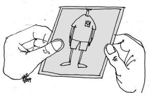

Przykładowe rysunki Marka Wójcikiewicza książki Każdy Głos się liczy
Kategorycznie odmawiam zapłacenia drugiego mandatu. Zapomnieliście sierżancie, że znajdujemy się w
okręgu jednomandatowym?
W tym roku stosujemy polski system wyborczy: przegrywający kandydat zostaje zjedzony.
Przypominam, że wybory są tajne! Niech się pani nie waży pod żadnym pozorem otwierać koperty z nazwiskami!
Głupia sprawa. Przez te całe przemiany demokratyczne rój wybrał w tym roku trutnia na królową… I kto
teraz będzie znosił jaja?
Opracowałem praktyczna metodę podziału waszego kraju na dwa naturalne okręgi wyborcze
Sprawa wpisania systemu pierwiastkowego Penrose’a do Traktatu Europejskiego wygląda beznadziejnie.
Przewertowałem już 4 strony i nadal nie widać końca wzoru. Posłuchaj: √2 to
1,4142135623730950488016887242097…
Tegoroczne wybory miss piękności naszej oazy wygrała kandydatka numer trzy

A u nas aktualny mistrz kraju po prostu nie zmieścił się w kadrze
Naprawdę nie trzeba dziękować. Jak tylko usłyszałem, że w programie mają być jakieś wariacje, to od razu
podjęliśmy akcję prewencyjną.
Mówiłem panu, mam niepodważalny dowód na to, że Picasso nie był abstrakcjonistą.
Świetnie. Ale jaką metodą wybierzemy metodę głosowania?